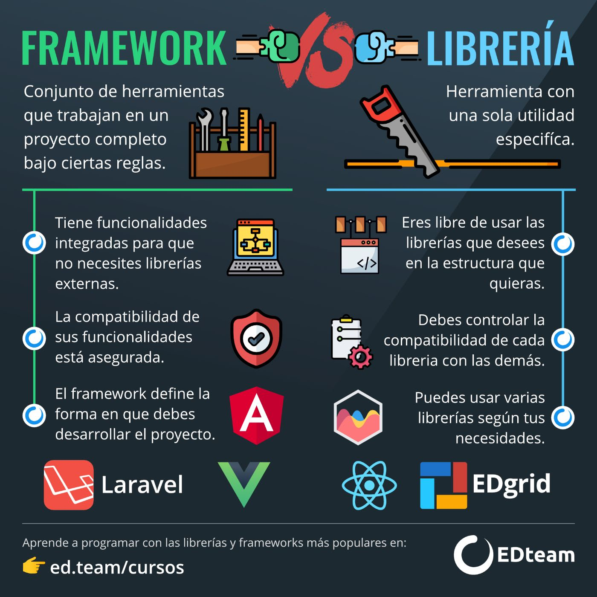
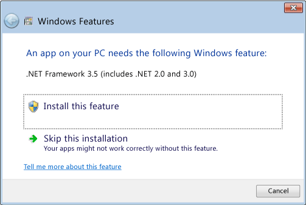

¿Que es un framework?
Un framework es un esquema o marco de trabajo que ofrece una estructura base para elaborar un proyecto
con objetivos específicos, una especie de plantilla que sirve como punto de partida para la organización
y desarrollo de software. Utilizar frameworks puede simplificar una tarea o proceso, de ahí que se trate
de una de las herramientas habituales que manejan los Digital Workers, porque les ayuda a ser más ágiles
y productivos.
Los frameworks proporcionan una serie de funciones y servicios comunes que se utilizan con frecuencia en el
desarrollo de aplicaciones, tales como el manejo de la lógica de negocios, el acceso a bases de datos,
la gestión de sesiones y la autenticación de usuarios.
¿Por qué usar un framework?
Te conviene usar frameworks porque contar con una plantilla para llevar a cabo el trabajo facilita las tareas,
reduce los tiempos, evita errores y, en consecuencia, ayuda a que todos los implicados en el proyecto estén
más satisfechos. En el mercado puedes encontrar frameworks específicos para un lenguaje de programación concreto.
Aunque también los hay que no dependen de un único lenguaje.
Además, los frameworks a menudo proporcionan una arquitectura sólida y una mejor separación de responsabilidades
para el código, lo que facilita la mantenibilidad y la escalabilidad del software. En resumen, utilizar un framework
puede ahorrar tiempo y esfuerzo en el desarrollo de aplicaciones y ayudar a crear un software de alta calidad.
¿Cuál es la relación entre las librerías y los frameworks?
Una librería es un conjunto de funciones y rutinas que pueden ser utilizadas para realizar tareas específicas
en un programa. Por otro lado, un framework es un conjunto de librerías y convenciones para desarrollar
aplicaciones, proporcionando una estructura para organizar el código y facilitando el desarrollo. En otras
palabras, las librerías son una colección de herramientas para realizar tareas específicas, mientras que los
frameworks proporcionan una estructura para desarrollar aplicaciones completas.

¿Como usar un framework?
La manera de usar un framework puede variar dependiendo del framework específico que estés utilizando. Sin embargo,
existen unos pasos generales que puedes seguir para comenzar a usar un framework:
1. Investiga y elige el framework adecuado para tu proyecto. Asegúrate de que el framework tenga las características
y funcionalidades que necesitas para tu proyecto.

2. Instala el framework en tu entorno de desarrollo. Esto puede incluir descargar el código fuente o utilizar un
administrador de paquetes para instalar el framework.

3. Familiarízate con la estructura y la documentación del framework. Aprende sobre la arquitectura y las convenciones
que el framework utiliza para organizar el código.
4. Crea una nueva aplicación o proyecto utilizando el framework. Esto puede incluir ejecutar un script o utilizar una
herramienta de línea de comandos para crear una estructura de proyecto básica.
5. Comienza a escribir tu código. Utiliza las herramientas y las librerías proporcionadas por el framework para
implementar las funcionalidades de tu aplicación.
6. Prueba y depura tu código. Asegúrate de que tu aplicación funcione correctamente y de que esté libre de errores.
7. Documenta y publica tu aplicación. Asegúrate de que tu código esté bien documentado y de que esté listo para
ser publicado o implementado.
8. Es importante mencionar que cada framework tiene una forma de implementarlo y una estructura propia por lo que es
recomendable seguir la documentación del framework que estas utilizando para tener un mejor entendimiento.